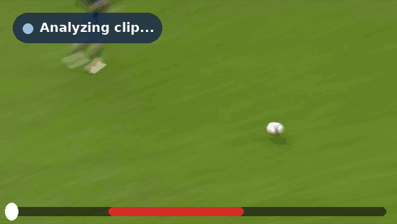
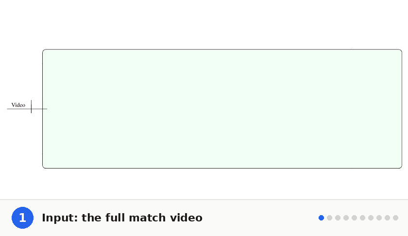
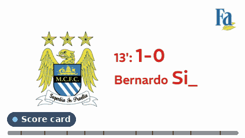
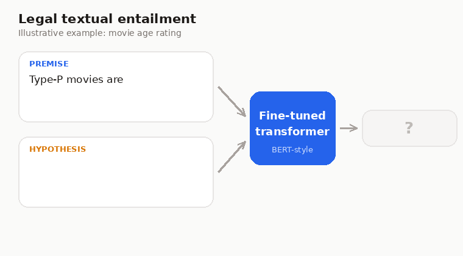

Multimodal foul detection in football
Mar – Jul 2025A framework that fuses visual and temporal signals to spot foul situations, with a new data augmentation technique to handle class imbalance.

A framework that fuses visual and temporal signals to spot foul situations, with a new data augmentation technique to handle class imbalance.

An automated pipeline that turns match footage into concise summaries using BERT and GPT, backed by a self-built database of the top five European leagues.


Fine-tuned transformer models to decide entailment between complex legal texts, and co-authored a technical report with future research directions.

Open to AI engineering and research opportunities. The best way to reach me is by email.